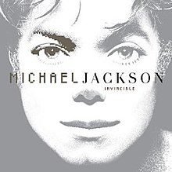

Invincible
 Invincible is the tenth and final studio album by American singer Michael Jackson, released on October 30, 2001, by Epic Records. It was Jackson's sixth studio album released through Epic, and his last released before his death in 2009. The album features appearances from Carlos Santana, the Notorious B.I.G. and Slash. It incorporates R&B, pop and soul, and, similarly to Jackson's previous material, the album explores themes such as love, romance, isolation, media criticism, and social issues. The album's creation was expensive and laborious. Jackson started the multi-genre production in 1997 and did not finish until eight weeks before the album's October 2001 release. It was reported that it cost $30 million to make the album, making it the most expensive album ever made. There was no concert tour to promote Invincible; Jackson refused to tour, adding to the already growing rift between him and Sony Music Entertainment.[2] Following Sony's decision to abruptly end promotion for the album, Jackson made allegations in July 2002 that Tommy Mottola was a "devil" and a "racist" who did not support his African-American artists but used them for personal gain. Invincible debuted at number one on the Billboard 200 albums chart in the United States and in ten other countries worldwide. The album was certified double Platinum in January 2002 by the Recording Industry Association of America (RIAA) and has sold over 8 million copies worldwide. The album's lead single, "You Rock My World", peaked at number ten on the US Billboard Hot 100 and was nominated for Best Male Pop Vocal Performance at the 2002 Grammy Awards. The album spawned two more singles, "Cry" and "Butterflies", as well as the promotional single "Speechless". Invincible received mixed reviews from music critics, and became Jackson's most critically derided album. Retrospective reviews have been more positive, and the album has been credited as featuring early examples of dubstep. In 2009, it was voted by online readers of Billboard magazine as the best album of the decade.[3